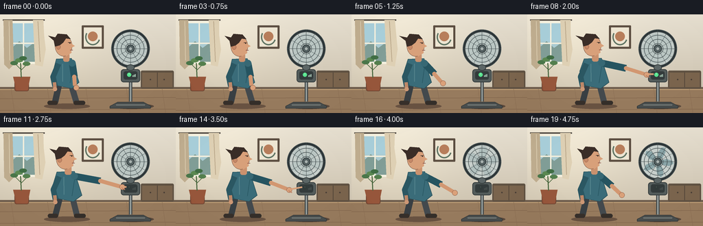
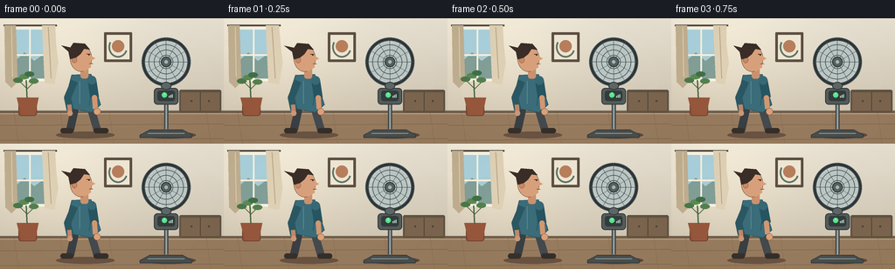
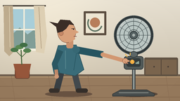
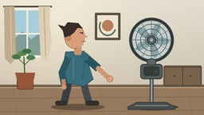

CODING AGENTS AS PIXEL WORLD MODELS
traex/GPT-5.6-Sol · motion_rationality_0048
点击播放 · 原生 RGB 像素
逐轮保存的候选
回放视频、检查图与代码变化。
每份候选均可单独播放。实际图片检查记录在下方工具轨迹中。
候选 01播放与检查图
点击播放 · 原生 RGB 像素

展开代码变化
--- 上一保存版本
+++ 本次保存版本
@@ -0,0 +1,284 @@
+from pathlib import Path
+import math
+import numpy as np
+from PIL import Image, ImageDraw, ImageFilter
+import artifact_io
+
+W, H, N = 256, 144, 20
+S = 4
+SW, SH = W*S, H*S
+
+
+def sc(v):
+ return int(round(v*S))
+
+def pt(p):
+ return tuple(sc(x) for x in p)
+
+def smooth(a, b, x):
+ if x <= a: return 0.0
+ if x >= b: return 1.0
+ t = (x-a)/(b-a)
+ return t*t*(3-2*t)
+
+def blend(c1, c2, t):
+ return tuple(round(a*(1-t)+b*t) for a,b in zip(c1,c2))
+
+def poly(draw, coords, fill, outline=None, width=1):
+ draw.polygon([pt(p) for p in coords], fill=fill)
+ if outline:
+ draw.line([pt(p) for p in coords+[coords[0]]], fill=outline, width=sc(width), joint='curve')
+
+def ellipse(draw, box, fill, outline=None, width=1):
+ draw.ellipse(tuple(sc(x) for x in box), fill=fill, outline=outline, width=sc(width) if outline else 1)
+
+def line(draw, coords, fill, width, joint='curve'):
+ draw.line([pt(p) for p in coords], fill=fill, width=sc(width), joint=joint)
+
+def rounded(draw, box, radius, fill, outline=None, width=1):
+ draw.rounded_rectangle(tuple(sc(x) for x in box), radius=sc(radius), fill=fill,
+ outline=outline, width=sc(width) if outline else 1)
+
+def make_background():
+ # Soft warm apartment with subtle directional daylight.
+ y = np.arange(SH)[:,None]
+ x = np.arange(SW)[None,:]
+ top = np.array([232, 225, 210], dtype=float)
+ bottom = np.array([205, 195, 176], dtype=float)
+ t = np.clip(y/(SH*.77), 0, 1)[...,None]
+ arr = top*(1-t) + bottom*t
+ arr = np.broadcast_to(arr, (SH,SW,3)).copy()
+ light = np.exp(-(((x-SW*.22)/(SW*.35))**2 + ((y-SH*.27)/(SH*.6))**2))[...,None]
+ arr += light*np.array([15,14,10])
+ arr = np.clip(arr,0,255).astype(np.uint8)
+ im = Image.fromarray(arr, 'RGB')
+ d = ImageDraw.Draw(im)
+ # Wall trim and wooden floor
+ d.rectangle((0,sc(108),SW,SH), fill=(151,123,94))
+ d.rectangle((0,sc(106),SW,sc(109)), fill=(113,96,79))
+ d.rectangle((0,sc(109),SW,sc(110)), fill=(190,159,119))
+ for yy in [123,140]:
+ d.line((0,sc(yy),SW,sc(yy-2)), fill=(132,104,79), width=sc(1))
+ for xx in [16,69,125,184,236]:
+ d.line((sc(xx),sc(109),sc(xx+5),SH), fill=(139,110,83), width=sc(.6))
+ # Window and curtains at far left
+ d.rounded_rectangle((sc(8),sc(10),sc(61),sc(72)), radius=sc(2), fill=(97,106,108), outline=(246,242,225), width=sc(3))
+ d.rectangle((sc(11),sc(13),sc(58),sc(69)), fill=(171,204,211))
+ # sky gradient bands
+ d.rectangle((sc(11),sc(13),sc(58),sc(39)), fill=(169,207,218))
+ d.polygon([pt((11,55)),pt((28,39)),pt((39,49)),pt((58,35)),pt((58,69)),pt((11,69))], fill=(129,158,151))
+ d.line((sc(34),sc(13),sc(34),sc(69)), fill=(244,240,222), width=sc(2))
+ d.line((sc(11),sc(42),sc(58),sc(42)), fill=(244,240,222), width=sc(2))
+ # curtain top rail and left curtain
+ d.line((sc(4),sc(8),sc(65),sc(8)), fill=(79,73,65), width=sc(2))
+ poly(d, [(5,8),(18,8),(20,73),(13,80),(6,73)], (192,174,144))
+ line(d, [(13,10),(14,67)], (219,205,177), 1)
+ # Framed minimalist print
+ d.rounded_rectangle((sc(119),sc(16),sc(151),sc(50)), radius=sc(1), fill=(92,78,65))
+ d.rectangle((sc(122),sc(19),sc(148),sc(47)), fill=(237,229,210))
+ d.ellipse((sc(128),sc(25),sc(142),sc(39)), fill=(183,126,91))
+ d.arc((sc(124),sc(21),sc(146),sc(45)), 20, 210, fill=(96,117,100), width=sc(2))
+ # low cabinet
+ rounded(d, (205,82,253,108), 2, (96,82,67))
+ d.rectangle((sc(207),sc(85),sc(251),sc(106)), fill=(123,101,78))
+ d.line((sc(229),sc(85),sc(229),sc(106)), fill=(81,68,57), width=sc(1))
+ ellipse(d,(218,94,220,96),(72,62,54)); ellipse(d,(238,94,240,96),(72,62,54))
+ return im
+
+BG = make_background()
+
+# Integrated blade angle with explicit inertia after the switch is pressed.
+vel = [1.62]*10 + [1.52,1.36,1.17,.95,.72,.52,.34,.20,.09,0.0]
+angles = [0.0]
+for i in range(1,N):
+ angles.append(angles[-1] + vel[i])
+
+
+def draw_plant(im, frame, power):
+ d=ImageDraw.Draw(im)
+ # Pot behind person. Leaf flutter diminishes as the fan coasts down.
+ rounded(d,(21,91,42,112),3,(140,79,56), (101,66,49), .7)
+ poly(d,[(19,91),(44,91),(40,111),(24,111)],(151,87,60))
+ line(d,[(31,92),(30,71)],(74,103,63),1.6)
+ line(d,[(30,80),(22,72)],(74,103,63),1.2)
+ line(d,[(30,82),(39,73)],(74,103,63),1.2)
+ flutter = power*math.sin(frame*2.1)*1.3
+ for cx,cy,ang,col in [(21,71,-.5,(75,119,74)),(39,72,.5,(84,128,78)),(28,67,-.2,(91,137,82)),(34,64,.3,(65,111,69))]:
+ dx=math.cos(ang)*7; dy=math.sin(ang)*4 + flutter
+ ellipse(d,(cx-6,cy-3+flutter,cx+5,cy+3+flutter),col)
+
+
+def draw_person(im, f, power):
+ d=ImageDraw.Draw(im)
+ # Reach: begin after establishing shot, contact at frames 9-10, then modest recoil.
+ if f <= 9:
+ r=smooth(2.5,9,f)
+ elif f <= 11:
+ r=1.0
+ else:
+ r=1.0-0.60*smooth(11,19,f)
+ lean=4.2*r
+ bob=.35*math.sin(f*.55)
+ # floor shadow
+ ellipse(d,(64,130,131,138),(105,83,66))
+ # rear leg
+ line(d,[(86+lean*.35,101),(80+lean*.12,128)],(57,63,67),9)
+ rounded(d,(69+lean*.12,126,84+lean*.12,132),3,(55,48,43))
+ # front leg
+ line(d,[(103+lean*.45,101),(111+lean*.20,128)],(67,73,77),9)
+ rounded(d,(107+lean*.2,126,124+lean*.2,132),3,(53,47,42))
+ # wind-pulled shirt back/hem, settling after power-off
+ flutter=power*(1.8+1.0*math.sin(f*1.75))
+ body=[(82+lean*.20,65+bob),(104+lean,64+bob),(115+lean,99),(105+lean*.5,108),
+ (84+lean*.25,104),(79-flutter,83)]
+ poly(d,body,(58,108,121),(39,79,88),.8)
+ # shirt folds
+ line(d,[(91+lean*.4,72),(91+lean*.45,98)],(87,135,143),1)
+ line(d,[(106+lean*.75,71),(102+lean*.65,100)],(37,85,96),.8)
+ # rear arm remains relaxed, slight counter-motion
+ line(d,[(85+lean*.25,72),(77+lean*.1,91),(80+lean*.1,105)],(43,87,98),8)
+ line(d,[(79+lean*.1,99),(80+lean*.1,109)],(190,135,104),5)
+ ellipse(d,(77+lean*.1,106,83+lean*.1,112),(205,151,116))
+ # neck
+ rounded(d,(92+lean*.55,56+bob,101+lean*.7,69+bob),3,(202,145,110))
+ # Head, in profile facing right
+ ellipse(d,(80+lean*.40,31+bob,105+lean*.65,61+bob),(216,160,122),(113,78,61),.6)
+ # face profile: nose and jaw overlay
+ poly(d,[(100+lean*.62,40+bob),(109+lean*.7,46+bob),(103+lean*.67,49+bob),
+ (104+lean*.65,56+bob),(96+lean*.58,61+bob),(91+lean*.5,53+bob)],(216,160,122))
+ # Ear
+ ellipse(d,(82+lean*.42,44+bob,88+lean*.45,51+bob),(198,137,103),(143,91,70),.5)
+ # Hair cap and wind-lifted back locks
+ hair=(58,45,39)
+ poly(d,[(80+lean*.38,47+bob),(78+lean*.35,37+bob),(84+lean*.4,28+bob),
+ (97+lean*.56,29+bob),(103+lean*.62,36+bob),(96+lean*.55,35+bob),
+ (92+lean*.5,41+bob),(87+lean*.44,45+bob)],hair)
+ # little tuft blown left while fan runs
+ sway=power*(2.1+1.1*math.sin(f*1.65))
+ poly(d,[(83+lean*.4,34+bob),(72-sway+lean*.25,31+bob),(78+lean*.32,38+bob)],hair)
+ # eye, brow, mouth
+ line(d,[(99+lean*.62,41+bob),(103+lean*.66,41+bob)],(65,48,42),.8)
+ ellipse(d,(101+lean*.64,41+bob,102.5+lean*.65,42.5+bob),(42,35,31))
+ line(d,[(102+lean*.66,52+bob),(106+lean*.68,52+bob)],(131,69,63),.7)
+ # Reaching arm geometry. Upper sleeve and exposed forearm are layered.
+ sh=(105+lean*.80,71+bob)
+ elbow=(108*(1-r)+145*r + lean*.25, 91*(1-r)+78*r+bob)
+ wrist=(109*(1-r)+174*r + lean*.05, 104*(1-r)+86*r+bob)
+ line(d,[sh,elbow],(38,84,96),10)
+ ellipse(d,(sh[0]-5,sh[1]-5,sh[0]+5,sh[1]+5),(55,104,116))
+ line(d,[elbow,wrist],(210,151,113),5.7)
+ ellipse(d,(elbow[0]-3,elbow[1]-3,elbow[0]+3,elbow[1]+3),(210,151,113))
+ # Hand and extended index finger; hand reaches the control at x184.
+ handx=111*(1-r)+178*r + lean*.02
+ handy=107*(1-r)+87*r+bob
+ ellipse(d,(handx-4,handy-4,handx+4,handy+4),(218,161,122),(139,91,70),.5)
+ if r>.72:
+ line(d,[(handx+1,handy-1),(184.0,87.0)],(218,161,122),2.6)
+ # thumb
+ line(d,[(handx-1,handy+1),(handx+4,handy+4)],(190,129,99),1.3)
+
+
+def blade_shape(cx,cy,ang):
+ # A rounded-looking tapered blade polygon radiating from the hub.
+ u=np.array([math.cos(ang),math.sin(ang)])
+ v=np.array([-u[1],u[0]])
+ points=[]
+ for a,b in [(3,-2),(12,-5),(21,-3),(23,1),(17,5),(7,4)]:
+ q=np.array([cx,cy])+u*a+v*b
+ points.append(tuple(q))
+ return points
+
+
+def draw_fan(im, f):
+ d=ImageDraw.Draw(im)
+ cx,cy=190,50
+ # Fan floor shadow
+ ellipse(d,(160,130,224,138),(93,75,61))
+ # back pole and neck
+ line(d,[(190,70),(190,127)],(66,72,73),5)
+ line(d,[(190,70),(190,127)],(153,162,160),2)
+ rounded(d,(176,80,204,99),4,(83,92,91),(48,55,56),1)
+ # control panel inset
+ rounded(d,(180,83,200,95),3,(51,59,59))
+ # power status is visibly live before press, amber at contact, dark after.
+ if f < 9:
+ glow=(87,226,142); core=(159,255,191)
+ elif f <=10:
+ glow=(244,173,65); core=(255,220,119)
+ else:
+ glow=(48,58,57); core=(75,84,81)
+ ellipse(d,(185,85,191,91),glow)
+ # power icon
+ line(d,[(188,85.8),(188,88.1)],core,.65)
+ # tiny speed bars which go dark at shutdown
+ bar=(171,202,184) if f<10 else (72,80,78)
+ for j in range(3):
+ d.rectangle((sc(193+j*1.8),sc(89-j*.9),sc(194+j*1.8),sc(91)),fill=bar)
+ # base
+ poly(d,[(171,128),(209,128),(220,134),(219,137),(160,137),(160,134)],(73,78,78),(46,51,52),.7)
+ line(d,[(169,132),(211,132)],(145,151,147),1)
+ # Rear rim of fan head
+ ellipse(d,(162,22,218,78),(49,57,59),(34,41,43),2)
+ ellipse(d,(165,25,215,75),(199,207,203),(73,82,83),1)
+ # blade plate on an RGBA overlay, with multiple exposure while moving
+ blade_layer=Image.new('RGBA',(SW,SH),(0,0,0,0))
+ bd=ImageDraw.Draw(blade_layer,'RGBA')
+ speed=vel[f]
+ samples=5 if speed>.5 else (3 if speed>.12 else 1)
+ span=min(1.0,speed*.50)
+ for k in range(samples):
+ off=(k/(max(1,samples-1))-.5)*span
+ alpha=44 if samples==5 else (72 if samples==3 else 205)
+ for b in range(5):
+ pts=blade_shape(cx,cy,angles[f]+off+b*2*math.pi/5)
+ bd.polygon([pt(p) for p in pts],fill=(122,153,158,alpha))
+ if samples>1:
+ blade_layer=blade_layer.filter(ImageFilter.GaussianBlur(sc(.45)))
+ im.alpha_composite(blade_layer)
+ d=ImageDraw.Draw(im)
+ # grille: concentric wire guards and radial spokes sit over blades
+ for r in [8,14,20,25,28]:
+ ellipse(d,(cx-r,cy-r,cx+r,cy+r),None,(66,77,79),.65 if r<28 else 1.2)
+ for a in np.linspace(0,2*math.pi,12,endpoint=False):
+ line(d,[(cx+6*math.cos(a),cy+6*math.sin(a)),(cx+27*math.cos(a),cy+27*math.sin(a))],(68,79,80),.55)
+ ellipse(d,(184,44,196,56),(83,95,96),(44,53,54),1)
+ ellipse(d,(188,48,192,52),(169,178,175))
+ # Neck hinge in front
+ ellipse(d,(184,73,196,82),(92,102,102),(48,56,56),1)
+ # click accent at precise press frame, subtle and readable
+ if f==9:
+ line(d,[(181,81),(178,77)],(244,188,83),1.3)
+ line(d,[(185,79),(185,75)],(244,188,83),1.3)
+
+
+def curtain_overlay(im,f,power):
+ # right edge of curtain billows toward the person when the running fan's airflow is present,
+ # then relaxes after switch-off.
+ d=ImageDraw.Draw(im,'RGBA')
+ billow=power*(2.0+1.1*math.sin(f*1.45))
+ pts=[(48,8),(63,8),(62+billow,30),(65+billow*.7,51),(60+billow,76),(51,74)]
+ d.polygon([pt(p) for p in pts],fill=(222,208,180,235))
+ line(d,[(55,10),(57+billow*.6,69)],(184,165,136,210),1)
+
+
+def frame_image(f):
+ im=BG.convert('RGBA')
+ # normalized residual airflow: full before click, then proportional to fan inertia.
+ power=1.0 if f<10 else vel[f]/1.62
+ curtain_overlay(im,f,power)
+ draw_plant(im,f,power)
+ # fan behind hand but otherwise in front of room; person arm must overlap control.
+ draw_fan(im,f)
+ draw_person(im,f,power)
+ # Repaint only control-face edge very subtly? Arm/finger remains visibly over it.
+ # Atmospheric warm vignette and fine deterministic film grain.
+ arr=np.array(im.convert('RGB')).astype(np.int16)
+ yy,xx=np.mgrid[0:H*S,0:W*S]
+ vign=np.sqrt(((xx-W*S/2)/(W*S*.75))**2+((yy-H*S/2)/(H*S*.85))**2)
+ arr=(arr-np.clip((vign-.45)*7,0,6)[...,None]).clip(0,255).astype(np.uint8)
+ out=Image.fromarray(arr).resize((W,H),Image.Resampling.LANCZOS)
+ return np.asarray(out,dtype=np.uint8)
+
+frames=np.stack([frame_image(i) for i in range(N)],axis=0)
+artifact_io.save(frames, Path(__file__).resolve().parent)
+print('saved',frames.shape,frames.dtype)
可观测工具轨迹
实际执行的命令与返回图片。
命令 1exit 0
/bin/bash -lc "ls -la && printf '\\n--- prompt.txt ---\\n' && cat prompt.txt && printf '\\n--- GENERATION_RULES.md ---\\n' && cat GENERATION_RULES.md && printf '\\n--- task_spec.json ---\\n' && cat task_spec.json"
命令 2exit 0
/bin/bash -lc "sed -n '1,260p' artifact_io.py"
命令 3exit 0
/bin/bash -lc "cat > generate.py <<'PY'
from pathlib import Path
import math
import numpy as np
from PIL import Image, ImageDraw, ImageFilter
import artifact_io
W, H, N = 256, 144, 20
S = 4
SW, SH = W*S, H*S
def sc(v):
return int(round(v*S))
def pt(p):
return tuple(sc(x) for x in p)
def smooth(a, b, x):
if x <= a: return 0.0
if x >= b: return 1.0
t = (x-a)/(b-a)
return t*t*(3-2*t)
def blend(c1, c2, t):
return tuple(round(a*(1-t)+b*t) for a,b in zip(c1,c2))
def poly(draw, coords, fill, outline=None, width=1):
draw.polygon([pt(p) for p in coords], fill=fill)
if outline:
draw.line([pt(p) for p in coords+[coords[0]]], fill=outline, width=sc(width), joint='curve')
def ellipse(draw, box, fill, outline=None, width=1):
draw.ellipse(tuple(sc(x) for x in box), fill=fill, outline=outline, width=sc(width) if outline else 1)
def line(draw, coords, fill, width, joint='curve'):
draw.line([pt(p) for p in coords], fill=fill, width=sc(width), joint=joint)
def rounded(draw, box, radius, fill, outline=None, width=1):
draw.rounded_rectangle(tuple(sc(x) for x in box), radius=sc(radius), fill=fill,
outline=outline, width=sc(width) if outline else 1)
def make_background():
# Soft warm apartment with subtle directional daylight.
y = np.arange(SH)[:,None]
x = np.arange(SW)[None,:]
top = np.array([232, 225, 210], dtype=float)
bottom = np.array([205, 195, 176], dtype=float)
t = np.clip(y/(SH*.77), 0, 1)[...,None]
arr = top*(1-t) + bottom*t
arr = np.broadcast_to(arr, (SH,SW,3)).copy()
light = np.exp(-(((x-SW*.22)/(SW*.35))**2 + ((y-SH*.27)/(SH*.6))**2))[...,None]
arr += light*np.array([15,14,10])
arr = np.clip(arr,0,255).astype(np.uint8)
im = Image.fromarray(arr, 'RGB')
d = ImageDraw.Draw(im)
# Wall trim and wooden floor
d.rectangle((0,sc(108),SW,SH), fill=(151,123,94))
d.rectangle((0,sc(106),SW,sc(109)), fill=(113,96,79))
d.rectangle((0,sc(109),SW,sc(110)), fill=(190,159,119))
for yy in [123,140]:
d.line((0,sc(yy),SW,sc(yy-2)), fill=(132,104,79), width=sc(1))
for xx in [16,69,125,184,236]:
d.line((sc(xx),sc(109),sc(xx+5),SH), fill=(139,110,83), width=sc(.6))
# Window and curtains at far left
d.rounded_rectangle((sc(8),sc(10),sc(61),sc(72)), radius=sc(2), fill=(97,106,108), outline=(246,242,225), width=sc(3))
d.rectangle((sc(11),sc(13),sc(58),sc(69)), fill=(171,204,211))
# sky gradient bands
d.rectangle((sc(11),sc(13),sc(58),sc(39)), fill=(169,207,218))
d.polygon([pt((11,55)),pt((28,39)),pt((39,49)),pt((58,35)),pt((58,69)),pt((11,69))], fill=(129,158,151))
d.line((sc(34),sc(13),sc(34),sc(69)), fill=(244,240,222), width=sc(2))
d.line((sc(11),sc(42),sc(58),sc(42)), fill=(244,240,222), width=sc(2))
# curtain top rail and left curtain
d.line((sc(4),sc(8),sc(65),sc(8)), fill=(79,73,65), width=sc(2))
poly(d, [(5,8),(18,8),(20,73),(13,80),(6,73)], (192,174,144))
line(d, [(13,10),(14,67)], (219,205,177), 1)
# Framed minimalist print
d.rounded_rectangle((sc(119),sc(16),sc(151),sc(50)), radius=sc(1), fill=(92,78,65))
d.rectangle((sc(122),sc(19),sc(148),sc(47)), fill=(237,229,210))
d.ellipse((sc(128),sc(25),sc(142),sc(39)), fill=(183,126,91))
d.arc((sc(124),sc(21),sc(146),sc(45)), 20, 210, fill=(96,117,100), width=sc(2))
# low cabinet
rounded(d, (205,82,253,108), 2, (96,82,67))
d.rectangle((sc(207),sc(85),sc(251),sc(106)), fill=(123,101,78))
d.line((sc(229),sc(85),sc(229),sc(106)), fill=(81,68,57), width=sc(1))
ellipse(d,(218,94,220,96),(72,62,54)); ellipse(d,(238,94,240,96),(72,62,54))
return im
BG = make_background()
# Integrated blade angle with explicit inertia after the switch is pressed.
vel = [1.62]*10 + [1.52,1.36,1.17,.95,.72,.52,.34,.20,.09,0.0]
angles = [0.0]
for i in range(1,N):
angles.append(angles[-1] + vel[i])
def draw_plant(im, frame, power):
d=ImageDraw.Draw(im)
# Pot behind person. Leaf flutter diminishes as the fan coasts down.
rounded(d,(21,91,42,112),3,(140,79,56), (101,66,49), .7)
poly(d,[(19,91),(44,91),(40,111),(24,111)],(151,87,60))
line(d,[(31,92),(30,71)],(74,103,63),1.6)
line(d,[(30,80),(22,72)],(74,103,63),1.2)
line(d,[(30,82),(39,73)],(74,103,63),1.2)
flutter = power*math.sin(frame*2.1)*1.3
for cx,cy,ang,col in [(21,71,-.5,(75,119,74)),(39,72,.5,(84,128,78)),(28,67,-.2,(91,137,82)),(34,64,.3,(65,111,69))]:
dx=math.cos(ang)*7; dy=math.sin(ang)*4 + flutter
ellipse(d,(cx-6,cy-3+flutter,cx+5,cy+3+flutter),col)
def draw_person(im, f, power):
d=ImageDraw.Draw(im)
# Reach: begin after establishing shot, contact at frames 9-10, then modest recoil.
if f <= 9:
r=smooth(2.5,9,f)
elif f <= 11:
r=1.0
else:
r=1.0-0.60*smooth(11,19,f)
lean=4.2*r
bob=.35*math.sin(f*.55)
# floor shadow
ellipse(d,(64,130,131,138),(105,83,66))
# rear leg
line(d,[(86+lean*.35,101),(80+lean*.12,128)],(57,63,67),9)
rounded(d,(69+lean*.12,126,84+lean*.12,132),3,(55,48,43))
# front leg
line(d,[(103+lean*.45,101),(111+lean*.20,128)],(67,73,77),9)
rounded(d,(107+lean*.2,126,124+lean*.2,132),3,(53,47,42))
# wind-pulled shirt back/hem, settling after power-off
flutter=power*(1.8+1.0*math.sin(f*1.75))
body=[(82+lean*.20,65+bob),(104+lean,64+bob),(115+lean,99),(105+lean*.5,108),
(84+lean*.25,104),(79-flutter,83)]
poly(d,body,(58,108,121),(39,79,88),.8)
# shirt folds
line(d,[(91+lean*.4,72),(91+lean*.45,98)],(87,135,143),1)
line(d,[(106+lean*.75,71),(102+lean*.65,100)],(37,85,96),.8)
# rear arm remains relaxed, slight counter-motion
line(d,[(85+lean*.25,72),(77+lean*.1,91),(80+lean*.1,105)],(43,87,98),8)
line(d,[(79+lean*.1,99),(80+lean*.1,109)],(190,135,104),5)
ellipse(d,(77+lean*.1,106,83+lean*.1,112),(205,151,116))
# neck
rounded(d,(92+lean*.55,56+bob,101+lean*.7,69+bob),3,(202,145,110))
# Head, in profile facing right
ellipse(d,(80+lean*.40,31+bob,105+lean*.65,61+bob),(216,160,122),(113,78,61),.6)
# face profile: nose and jaw overlay
poly(d,[(100+lean*.62,40+bob),(109+lean*.7,46+bob),(103+lean*.67,49+bob),
(104+lean*.65,56+bob),(96+lean*.58,61+bob),(91+lean*.5,53+bob)],(216,160,122))
# Ear
ellipse(d,(82+lean*.42,44+bob,88+lean*.45,51+bob),(198,137,103),(143,91,70),.5)
# Hair cap and wind-lifted back locks
hair=(58,45,39)
poly(d,[(80+lean*.38,47+bob),(78+lean*.35,37+bob),(84+lean*.4,28+bob),
(97+lean*.56,29+bob),(103+lean*.62,36+bob),(96+lean*.55,35+bob),
(92+lean*.5,41+bob),(87+lean*.44,45+bob)],hair)
# little tuft blown left while fan runs
sway=power*(2.1+1.1*math.sin(f*1.65))
poly(d,[(83+lean*.4,34+bob),(72-sway+lean*.25,31+bob),(78+lean*.32,38+bob)],hair)
# eye, brow, mouth
line(d,[(99+lean*.62,41+bob),(103+lean*.66,41+bob)],(65,48,42),.8)
ellipse(d,(101+lean*.64,41+bob,102.5+lean*.65,42.5+bob),(42,35,31))
line(d,[(102+lean*.66,52+bob),(106+lean*.68,52+bob)],(131,69,63),.7)
# Reaching arm geometry. Upper sleeve and exposed forearm are layered.
sh=(105+lean*.80,71+bob)
elbow=(108*(1-r)+145*r + lean*.25, 91*(1-r)+78*r+bob)
wrist=(109*(1-r)+174*r + lean*.05, 104*(1-r)+86*r+bob)
line(d,[sh,elbow],(38,84,96),10)
ellipse(d,(sh[0]-5,sh[1]-5,sh[0]+5,sh[1]+5),(55,104,116))
line(d,[elbow,wrist],(210,151,113),5.7)
ellipse(d,(elbow[0]-3,elbow[1]-3,elbow[0]+3,elbow[1]+3),(210,151,113))
# Hand and extended index finger; hand reaches the control at x184.
handx=111*(1-r)+178*r + lean*.02
handy=107*(1-r)+87*r+bob
ellipse(d,(handx-4,handy-4,handx+4,handy+4),(218,161,122),(139,91,70),.5)
if r>.72:
line(d,[(handx+1,handy-1),(184.0,87.0)],(218,161,122),2.6)
# thumb
line(d,[(handx-1,handy+1),(handx+4,handy+4)],(190,129,99),1.3)
def blade_shape(cx,cy,ang):
# A rounded-looking tapered blade polygon radiating from the hub.
u=np.array([math.cos(ang),math.sin(ang)])
v=np.array([-u[1],u[0]])
points=[]
for a,b in [(3,-2),(12,-5),(21,-3),(23,1),(17,5),(7,4)]:
q=np.array([cx,cy])+u*a+v*b
points.append(tuple(q))
return points
def draw_fan(im, f):
d=ImageDraw.Draw(im)
cx,cy=190,50
# Fan floor shadow
ellipse(d,(160,130,224,138),(93,75,61))
# back pole and neck
line(d,[(190,70),(190,127)],(66,72,73),5)
line(d,[(190,70),(190,127)],(153,162,160),2)
rounded(d,(176,80,204,99),4,(83,92,91),(48,55,56),1)
# control panel inset
rounded(d,(180,83,200,95),3,(51,59,59))
# power status is visibly live before press, amber at contact, dark after.
if f < 9:
glow=(87,226,142); core=(159,255,191)
elif f <=10:
glow=(244,173,65); core=(255,220,119)
else:
glow=(48,58,57); core=(75,84,81)
ellipse(d,(185,85,191,91),glow)
# power icon
line(d,[(188,85.8),(188,88.1)],core,.65)
# tiny speed bars which go dark at shutdown
bar=(171,202,184) if f<10 else (72,80,78)
for j in range(3):
d.rectangle((sc(193+j*1.8),sc(89-j*.9),sc(194+j*1.8),sc(91)),fill=bar)
# base
poly(d,[(171,128),(209,128),(220,134),(219,137),(160,137),(160,134)],(73,78,78),(46,51,52),.7)
line(d,[(169,132),(211,132)],(145,151,147),1)
# Rear rim of fan head
ellipse(d,(162,22,218,78),(49,57,59),(34,41,43),2)
ellipse(d,(165,25,215,75),(199,207,203),(73,82,83),1)
# blade plate on an RGBA overlay, with multiple exposure while moving
blade_layer=Image.new('RGBA',(SW,SH),(0,0,0,0))
bd=ImageDraw.Draw(blade_layer,'RGBA')
speed=vel[f]
samples=5 if speed>.5 else (3 if speed>.12 else 1)
span=min(1.0,speed*.50)
for k in range(samples):
off=(k/(max(1,samples-1))-.5)*span
alpha=44 if samples==5 else (72 if samples==3 else 205)
for b in range(5):
pts=blade_shape(cx,cy,angles[f]+off+b*2*math.pi/5)
bd.polygon([pt(p) for p in pts],fill=(122,153,158,alpha))
if samples>1:
blade_layer=blade_layer.filter(ImageFilter.GaussianBlur(sc(.45)))
im.alpha_composite(blade_layer)
d=ImageDraw.Draw(im)
# grille: concentric wire guards and radial spokes sit over blades
for r in [8,14,20,25,28]:
ellipse(d,(cx-r,cy-r,cx+r,cy+r),None,(66,77,79),.65 if r<28 else 1.2)
for a in np.linspace(0,2*math.pi,12,endpoint=False):
line(d,[(cx+6*math.cos(a),cy+6*math.sin(a)),(cx+27*math.cos(a),cy+27*math.sin(a))],(68,79,80),.55)
ellipse(d,(184,44,196,56),(83,95,96),(44,53,54),1)
ellipse(d,(188,48,192,52),(169,178,175))
# Neck hinge in front
ellipse(d,(184,73,196,82),(92,102,102),(48,56,56),1)
# click accent at precise press frame, subtle and readable
if f==9:
line(d,[(181,81),(178,77)],(244,188,83),1.3)
line(d,[(185,79),(185,75)],(244,188,83),1.3)
def curtain_overlay(im,f,power):
# right edge of curtain billows toward the person when the running fan's airflow is present,
# then relaxes after switch-off.
d=ImageDraw.Draw(im,'RGBA')
billow=power*(2.0+1.1*math.sin(f*1.45))
pts=[(48,8),(63,8),(62+billow,30),(65+billow*.7,51),(60+billow,76),(51,74)]
d.polygon([pt(p) for p in pts],fill=(222,208,180,235))
line(d,[(55,10),(57+billow*.6,69)],(184,165,136,210),1)
def frame_image(f):
im=BG.convert('RGBA')
# normalized residual airflow: full before click, then proportional to fan inertia.
power=1.0 if f<10 else vel[f]/1.62
curtain_overlay(im,f,power)
draw_plant(im,f,power)
# fan behind hand but otherwise in front of room; person arm must overlap control.
draw_fan(im,f)
draw_person(im,f,power)
# Repaint only control-face edge very subtly? Arm/finger remains visibly over it.
# Atmospheric warm vignette and fine deterministic film grain.
arr=np.array(im.convert('RGB')).astype(np.int16)
yy,xx=np.mgrid[0:H*S,0:W*S]
vign=np.sqrt(((xx-W*S/2)/(W*S*.75))**2+((yy-H*S/2)/(H*S*.85))**2)
arr=(arr-np.clip((vign-.45)*7,0,6)[...,None]).clip(0,255).astype(np.uint8)
out=Image.fromarray(arr).resize((W,H),Image.Resampling.LANCZOS)
return np.asarray(out,dtype=np.uint8)
frames=np.stack([frame_image(i) for i in range(N)],axis=0)
artifact_io.save(frames, Path(__file__).resolve().parent)
print('saved',frames.shape,frames.dtype)
PY
python generate.py"视觉工具实际返回图片 1

视觉工具实际返回图片 2

视觉工具实际返回图片 3

视觉工具实际返回图片 4

保存候选 1 份；完成命令 3 次；可验证图片返回 4 张。原始 API 响应与完整日志保留在本地。